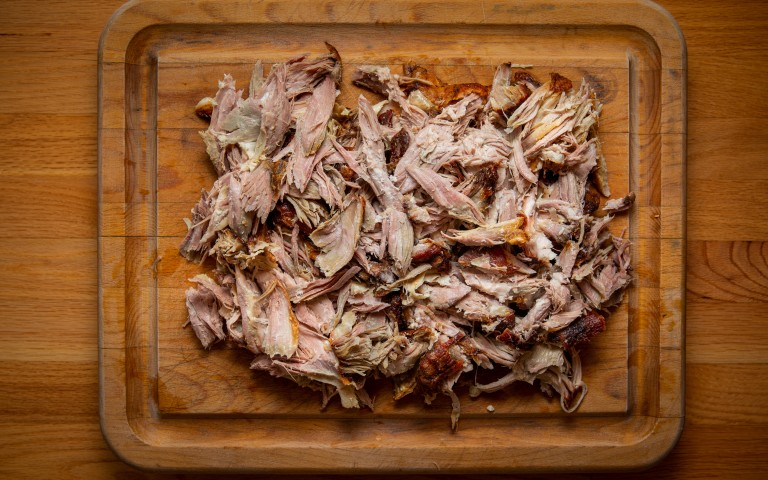

Pulled Pork

Look at this beautful pulled pork!
Here we'll lay out the details for you to make some dank pulled pork. Note:the picture is take from another site,
not the same as the recipe given.
Also, please note this may not even be a complete recipe, don't use it.
Ingredients
- 1 teaspoon vegetable oil
- 1 (4lb) pork shoulder roast
- 1 cup barbecue sauce
- 1/2 cup apple cider vinegar
- ...and many more...
Steps
- Pour the vegetable oil into the bottom of a slow cooker. Place the pork roast into the slow cooker; pour in
the barbecue sauce, apple cider vinegar, and chicken broth. Stir in the brown sugar, yellow mustard,
Worcestershire sauce, chili powder, onion, garlic, and thyme. Cover and cook on High until the roast shreds
easily with a fork, 5 to 6 hours.
- Remove the roast from the slow cooker, and shred the meat using two forks. Return the shredded pork to the
slow cooker, and stir the meat into the juices.
- Spread the inside of both halves of hamburger buns with butter. Toast the buns, butter side down, in a
skillet over medium heat until golden brown. Spoon pork into the toasted buns.